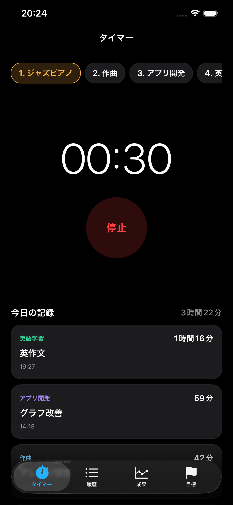

目標ごとに努力時間を記録
ジャズピアノ、作曲、アプリ開発、英語学習など、取り組みごとに時間を分けて残せます。
For builders
楽器、創作、語学、開発、スポーツ、研究。長期的な熟達には、 今日の練習や作業がどれだけ未来へつながっているかを見失わない仕組みが必要です。
ドリームタイマーは、複数の目標ごとに時間を分けて記録し、 今日・今週・累計の積み上げをカードとチャートで可視化します。
Features
ジャズピアノ、作曲、アプリ開発、英語学習など、取り組みごとに時間を分けて残せます。
目標時間に対する進捗率、累計時間、色分けされたカードで、積み上げの現在地が見えます。
その日の記録だけでなく、週単位のリズムや長期の伸びも振り返れます。
「英作文」「グラフ改善」のように、時間だけでなく何を進めたかも記録できます。
練習や作業に集中したまま、ロック画面や Dynamic Island からタイマーを確認・停止できます。
いま大事にしたい目標を優先度で並べ、時間の投下先を見える状態に保てます。
Screens

Privacy
ドリームタイマーは、アカウント登録を求めず、タイマーと記録に必要な範囲で動作します。 不要な広告配信やトラッキングを目的とした第三者SDKは利用しません。
プライバシーポリシーを確認する